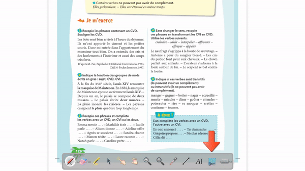
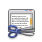

U modusu ploče
Traži u paleti alata. Pritisni ikonu i odaberi područje za snimanje. Nakon toga postoje tri mogućnosti:
u paleti alata. Pritisni ikonu i odaberi područje za snimanje. Nakon toga postoje tri mogućnosti:
- Dodaj u trenutačnu stranicu
- Dodaj u novu stranicu
- Dodaj u biblioteku(dodaje snimku u mapu „Slike” kako bi se mogla ponovo koristiti u bilo kojem trenutku)
Primjer cijelog postupka:

 Paleta alata, prikaz minijatura te OpenBoard biblioteka se neće snimiti pri odabiru sadržaja!
Paleta alata, prikaz minijatura te OpenBoard biblioteka se neće snimiti pri odabiru sadržaja!
U modusu radne površine
Za snimanje vlastitog rada u drugim programima, isto se može obaviti u modusu radne površine. Prijeđi u modus radne površine pritiskom na 
Prikazat će se dvije ikone:  za snimanje cijelog ekrana i
za snimanje cijelog ekrana i  za snimanje dijelova ekrana. Kao u modusu ploče, morat ćeš odabrati mjesto za ispuštanje snimke
za snimanje dijelova ekrana. Kao u modusu ploče, morat ćeš odabrati mjesto za ispuštanje snimke
Prikaz cijelog postupka

U web modusu
Isti postupak je dostupan u web modusu, gdje ja moguće snimiti dio ekrana ili trenutačnu karticu pomoću 